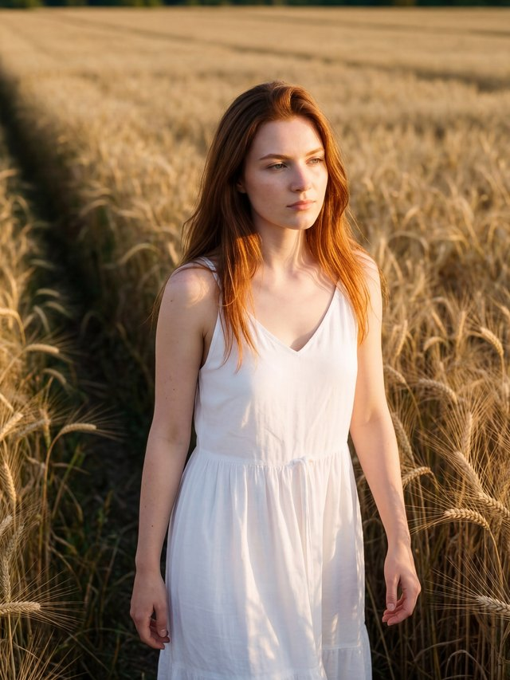
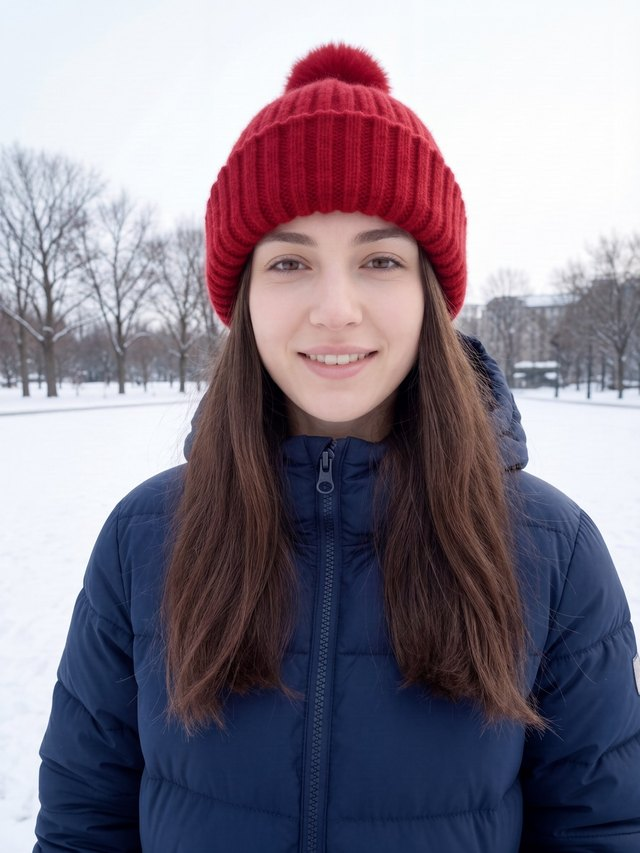
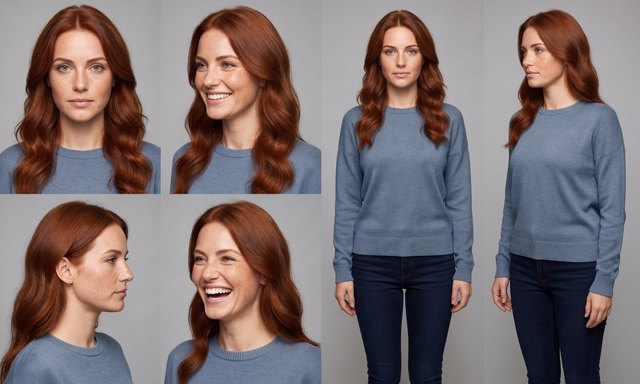
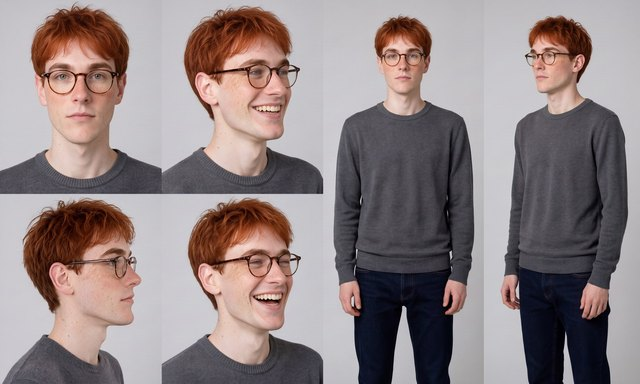
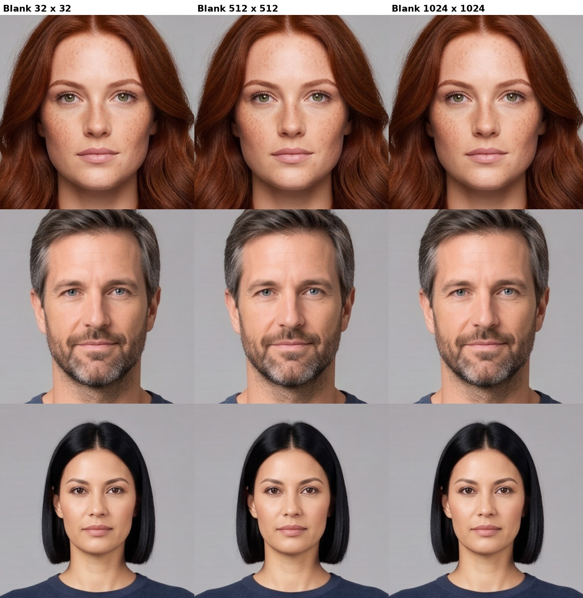
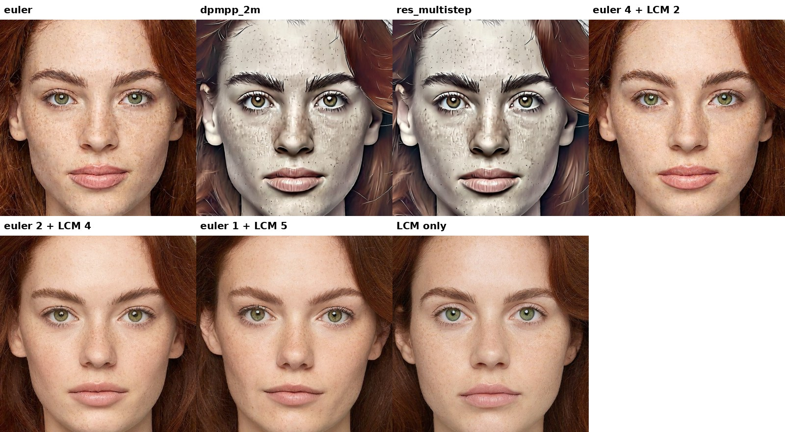
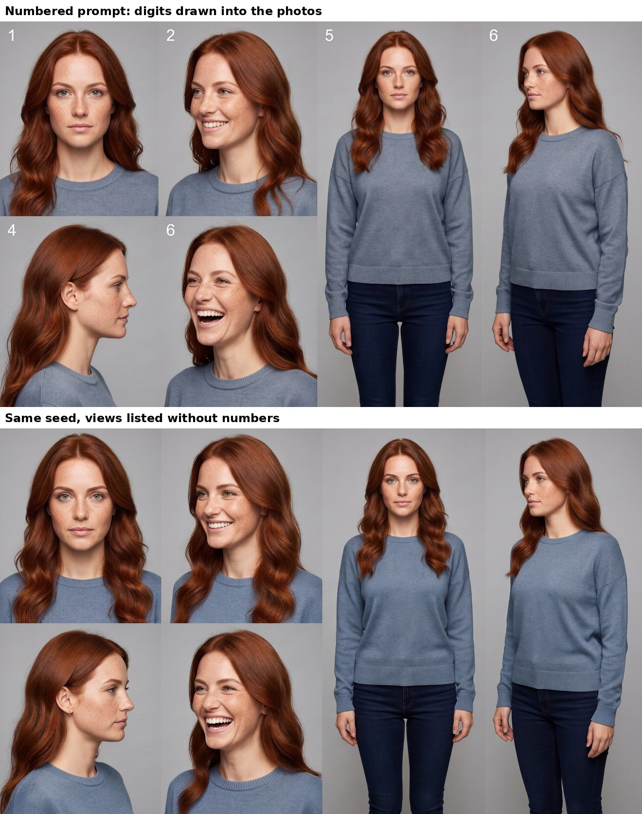
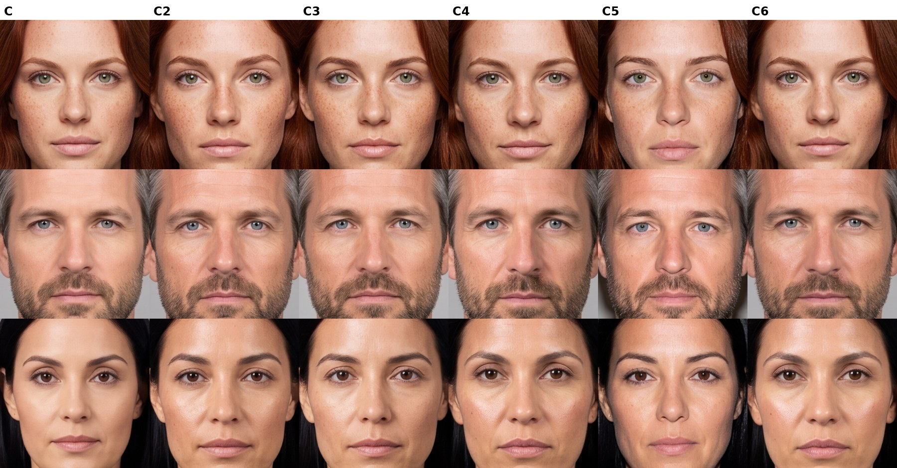

MiniMax H3 Image without the crunch
PixlStash · pixlstash.dev/minimax-h3-image.html
Workflows
Drag a file onto ComfyUI, or open it from the Workflow menu.
Standard ComfyUI (stock nodes only)
-

ComfyUI Text to image SamplerLCM 1.10 to 0.90, simple scheduler, 6 steps, a blank 512 x 512 picture; 3552 x 4736. -
 ComfyUI
Keep a seed
One euler step, then five LCM steps, text only: use the prompt and seed of a picture whose person you want to keep.
ComfyUI
Keep a seed
One euler step, then five LCM steps, text only: use the prompt and seed of a picture whose person you want to keep.
Model files, the official ones as in ComfyUI's own template:
-
Diffusion model, into
models/diffusion_models: minimax_h3_image_pruned_int8_convrot.safetensors -
Text encoder, into
models/text_encoders: qwen3vl_32b_minimax_h3_int8_convrot.safetensors -
VAE, into
models/vae: minimax_h3_image_vae_fp16.safetensors
PixlStash nodes (needs ComfyUI-PixlStash)
Load the same model files by their hash through PixlStash's loader nodes; the sheet workflows expect PixlStash's sheet prompt. Install the ComfyUI-PixlStash pack first.
-

ComfyUI Text to image
LCM with the blank picture, through PixlStash's loader nodes.
Text to image
LCM with the blank picture, through PixlStash's loader nodes.
-

ComfyUI
Character sheet
LCM character sheet with PixlStash's sheet prompt.
-

ComfyUI
Character sheet from a reference picture
A character sheet drawn from a reference picture, with LCM.
ComfyUI's official MiniMax H3 Image template gives crunchy, over-sharpened skin. Two stock-node changes fix it, and the prompt fixes the rest.
These tests were made to set good defaults for PixlStash's MiniMax H3 Image workflows, and are shared because they apply to any ComfyUI setup. They build on community work, credited at the end.
The fix
| Change | Effect | Use for |
|---|---|---|
SamplerLCM: s_noise 1.10 to 0.90, simple scheduler, 6 steps, CFG 1 |
No crunch | Everything |
A blank 512 x 512 EmptyImage into image_1, no VAE |
Natural colour and skin tone | Text-to-image only |
| Describe camera, light and skin; drop "photorealistic" | Less airbrushed skin | Every prompt |
| Describe grid panels instead of numbering them | No digits drawn into the photos | Sheets and grids |
No help: a 16 MP canvas instead of 4 MP, or an nvfp4 text encoder instead of int8. dpmpp_2m and res_multistep break the picture.
Method
Each comparison changes one thing: same prompt, seed and canvas, with faces compared as 1:1 crops. A rebuilt workflow was first checked to reproduce the original pixel for pixel. Likeness to a reference picture is scored with InsightFace. Most tests are 5280 x 3168 character sheets of three people: a young woman with freckles, a bearded man in his forties and a woman with a black bob. Model files: the official int8 ones.
The official template
Euler, simple scheduler, 6 steps: etched skin, blotchy freckles, wiry hair and oversaturated colour. Neither a 16 MP canvas nor the smaller nvfp4 text encoder (15.7 GB against 27 GB) changed that. The sampler was the cause.
LCM and the blank picture
SamplerLCM removes the crunch. The settings come from u/LilBrownBebeShoes's 20MP workflow, which credits Kijai's testing. Less noise than 1.10 to 0.90 turned skin blotchy; more was no better.
The blank picture calms colour and skin tone. It comes from Kijai's "text with empty image" mode in ComfyUI-KJNodes. It does not fix the crunch, and only text-to-image needs it: edits and reference sheets already have a picture. Kijai's mode uses it for the first 2 of 6 steps; these workflows keep it for all 6, and the two were not compared.

With the blank picture, the unnamed sweater goes from saturated teal to muted navy, and skin looks warmer and more natural, for all three people. It also settles the composition, so every sampler draws much the same picture. Its size hardly matters: 32 x 32, 512 x 512 and 1024 x 1024 gave nearly identical pictures.



Keeping a seed's person
The fix changes the person a seed draws. To keep that person, run
euler for 1 step and LCM for the other 5 (SplitSigmas at
1, DisableNoise on the LCM part). The person stays and the
worst crunch goes, but the picture is not fully rescued: a salvage, not
the fix. More euler steps keep more crunch.



Sheets from a reference picture
LCM keeps the reference's person at least as well as euler. Likeness is InsightFace similarity to the reference face, averaged over six photos and two seeds:
| Sampler | Woman | Man |
|---|---|---|
| LCM | 0.63 | 0.65 |
| euler 2, then LCM 4 | 0.62 | 0.64 |
| euler (official) | 0.57 | 0.62 |

The prompt
-
Numbered panels get drawn. "(1)" to "(6)" in a sheet
prompt appeared as digits in the photos; listing the views without
numbers stopped it.

Same seed: the numbered prompt drew digits into the photos (top); listing the views without numbers did not (bottom). - Describe the photo, not its quality. "Photorealistic" pulls toward a render; camera, light and skin words pull toward a photo.
- Skin. "True-to-life skin" gave airbrushed faces; describing texture fixed that but aged them. The wording that kept realism without the ageing: "real skin with its natural texture and a little shine, a few small marks, no makeup, no beauty filter, nothing airbrushed, smoothed, retouched or sharpened, a touch of sensor noise and a few flyaway hairs."
- Light words work (golden hour, street light, flash, office, overcast, winter, dusk); "early camera phone" and "Polaroid" barely register. "Pores" ages young faces, makeup feminises men, and "softbox" draws the softbox.




In PixlStash and in plain ComfyUI
PixlStash v2.0.2's MiniMax H3 Image text-to-image and sheet workflows use LCM, with the blank picture where there is no input picture; its inpaint workflow still uses the template's euler. Its optional Photo look adds camera, light and skin lines at run time, leaving the user's prompt untouched.
Stock-node workflows for plain ComfyUI, using the official model files, are linked at the top of the web version: text-to-image with the fix, and the keep-a-seed variant.
Limits
One or two seeds and two or three people per comparison, mostly portraits, judged by eye except likeness. Not tested: the blank picture for only the first steps, more than 6 steps, other schedulers, and LCM for edits and inpainting.
Credits
- u/LilBrownBebeShoes, for the MiniMax H3 Image 20MP workflow, the starting point.
- Kijai, for the LCM settings (as credited in that post) and the empty-image method in ComfyUI-KJNodes.
- Furkan Gözükara, igorls, PixelAI Labs and vyrekai, for related write-ups and workflows.
- MiniMax, for releasing MiniMax H3 Image as open weights.